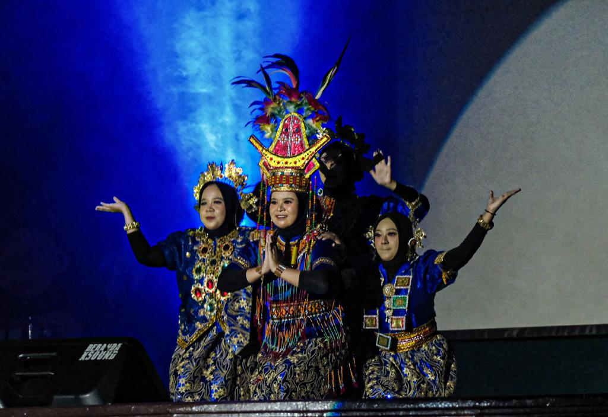
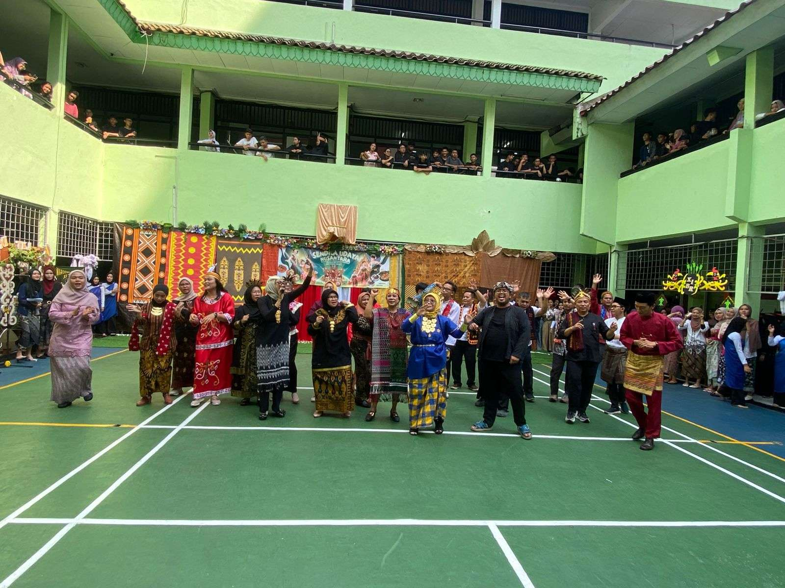

Study Tour
Study tour adalah kegiatan belajar sambil wisata edukasi yang dilakukan di luar kelas, bertujuan untuk memberikan pengalaman langsung kepada siswa atau mahasiswa tentang materi pelajaran yang dipelajari di sekolah.

PROGRAM |
Beranda |
Kegiatan |
Kegiatan |
Lokasi |
Pentas Seni Pentas seni, atau disingkat pensi, adalah acara yang menampilkan berbagai pertunjukan seni seperti musik, tari, teater, dan seni rupa, umumnya diselenggarakan oleh sekolah atau komunitas sebagai sarana pengembangan bakat dan kreativitas peserta. |
 |
Apel Pramuka Apel Pramuka adalah upacara singkat dan biasanya dilakukan untuk mengecek kesiapan peserta didik. |
Study Tour Study tour adalah kegiatan belajar sambil wisata edukasi yang dilakukan di luar kelas, bertujuan untuk memberikan pengalaman langsung kepada siswa atau mahasiswa tentang materi pelajaran yang dipelajari di sekolah. |
|
|  | P5 P5 adalah Projek Penguatan Profil Pelajar Pancasila, sebuah kegiatan kokurikuler dalam Kurikulum Merdeka yang dirancang untuk mengembangkan kompetensi dan karakter siswa sesuai nilai-nilai Pancasila melalui pembelajaran berbasis proyek. |